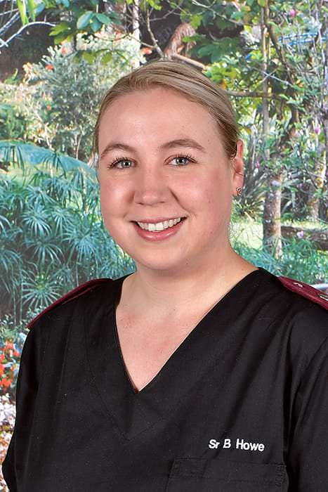
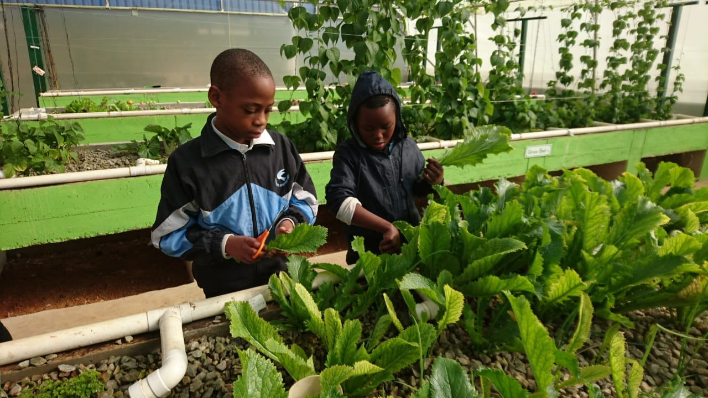
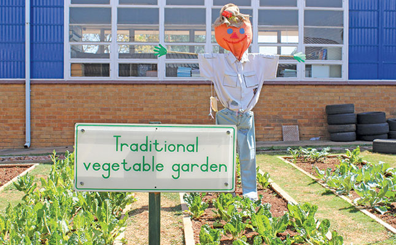
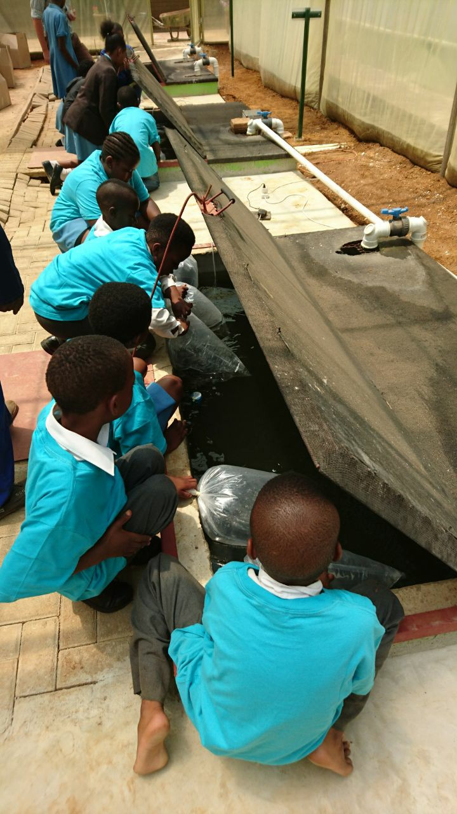
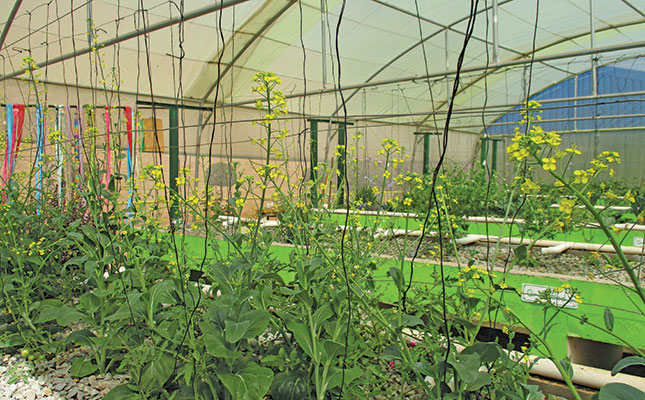

Our Heritage, Leadership & Community
Founded as the first school in Kempton Park, evolving into an accredited 100% English-medium Full-Service institution nurturing 1,150+ learners with academic rigor and clinical empathy.
A Heritage Rooted in Public Service (1903 – 2026)
Key historical milestones that defined our school's identity, English-medium transition, and commitment to inclusive learning.
Founding as C.N.O. Skool
Established as the very first educational institution in Kempton Park with 30 learners under pioneering headmaster Mr. William Kamp, bringing structured primary schooling to the burgeoning railway junction settlement.
Kempton Park – Skool Expansion
Rapid community expansion brought enrolment to 497 learners with 14 educators, establishing extensive academic standards, athletic discipline, and lasting cultural traditions on the East Rand.
Dedicated Primary School Designation
Formally designated as Kempton Park se Laerskool, focusing public educational resources on foundational literacy, numeracy, and character development.
Relocation to Kittyhawk Street, Rhodesfield
Relocated to our expansive, secure campus adjacent to the transit corridor, where our permanent brick academic wings, sports grounds, therapy suites, and gardens operate today.
100% English-Medium Teaching Inauguration
Responsive to evolving national demographics, the School Governing Body inaugurated English-medium instruction with 31 Grade 1 learners, transitioning rapidly into a 100% English-medium public school.
Accreditation as GDE Full-Service School
Officially designated as a Gauteng Department of Education Full-Service institution, building dedicated occupational and speech therapy suites and universal physical access ramps.
Modern Holistic Flagship (1,150+ Learners)
Today educating over 1,150 learners across 4 classes per grade from Grade R to 7, uniting academic CAPS excellence with clinical care, athletic league trophies, and community sustainability.
School Management Team (SMT)
Guided by seasoned educational leaders with decades of dedicated service in South African primary education.
Mrs. P. Pillay
Executive Institutional Leadership
Steering academic distinction, inclusive pastoral care, and whole-child development across our accredited Full-Service campus.
Extension 101 • admin@laerskoolkempton.co.zaMrs. Y. Raspal
Academic Governance & Operations
Overseeing curriculum alignment, CAPS progression, educator mentorship, and systemic academic evaluations.
Extension 102 • admin@laerskoolkempton.co.zaMs. A. Weideman
Student Affairs & Pastoral Wellbeing
Championing student code of conduct, positive behavior support, and co-curricular pastoral safety networks.
Extension 103 • admin@laerskoolkempton.co.zaPhase Department Heads
Leading each curricular developmental tier with phase-specific pedagogical expertise.
Ms. T. Van Heerden
Head of Foundation Phase • Phonics & Early Literacy
Ms. K. Delport
Head of Intermediate Phase • Mathematics & Sciences
Ms. J. O'Kelly
Head of Senior Phase • High School Transition & EMS
Ms. D. Opperman
Head of Inclusion • Clinical ISP & Concessions
Front Office & Operational Officers
Dedicated staff members who facilitate day-to-day parent interactions and student welfare.
Ms. P. Moyaha
Ext. 105Ms. N. Zikhali
Ext. 107Ms. Y. Smith
Ext. 106
Sr. B. Howe
Ext. 109Aquaponics STEM Lab & Feeding Scheme
Laerskool Kempton Park operates an integrated closed-loop aquaponics ecosystem. Fresh produce harvested from our hydroponic grow beds directly supplies our daily on-site feeding scheme, providing hot nutritious meals to 50 vulnerable learners every morning with complete dignity and confidentiality.
Experiential Biology & Agriculture
Learners across all three phases engage with the nitrogen cycle, biological water filtration, and solar automation directly within this living STEM laboratory.



